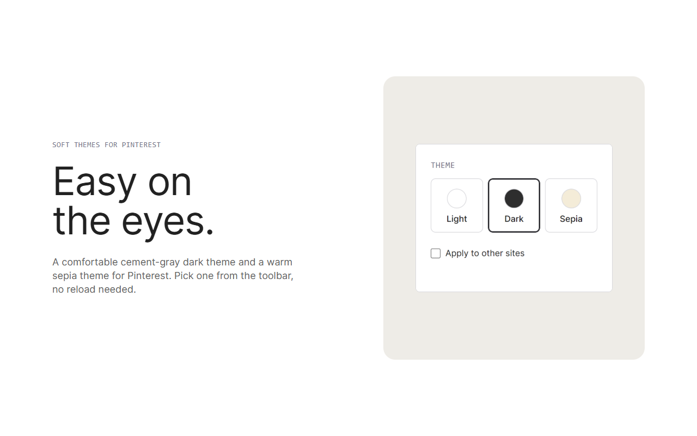

Modo escuro do Pinterest suave para os olhos
Um tema escuro em cinza cimento suave (nunca preto puro) e um tema sépia quente para o Pinterest. Um clique, sem recarregar, e seus pins mantêm as cores originais.

Escuro, sépia ou claro: você escolhe
Escuro
Fundo cinza cimento suave (#2b2d2f) com bom contraste para textos e ícones. Não é preto puro, então não ofusca à noite.
Sépia
Um tom de papel quente (#f4ecd8) com texto marrom, feito para sessões longas.
Claro
O Pinterest exatamente como vem. Volte com um clique.
A página muda. Seus pins não.
Fotos e vídeos mantêm as cores originais. A extensão funciona nos outros sites e domínios regionais do Pinterest, troca o tema na hora nas abas abertas e fala 55 idiomas automaticamente, seguindo o seu navegador.
Instale a extensão de modo escuro do Pinterest
- Baixe o .zip e descompacte numa pasta que você vai manter. O
manifest.jsondeve ficar direto dentro dela. - Abra
chrome://extensionse ative o Modo do desenvolvedor. - Clique em Carregar sem compactação e escolha a pasta.
- Fixe a extensão, clique no ícone e escolha Escuro ou Sépia. Atualize (F5) as abas do Pinterest que já estavam abertas.
Funciona no Chrome e em navegadores baseados em Chromium (confirmado no Brave). Guia completo e atualizações: README no GitHub.
Dúvidas sobre o modo escuro do Pinterest
Como colocar o Pinterest no modo escuro no Chrome?
Instale esta extensão, clique no ícone dela na barra e escolha Escuro. A página vira um cinza cimento suave na hora, e você pode trocar para Sépia ou voltar ao Claro quando quiser.
Por que cinza cimento e não preto?
O preto puro ao lado de fotos claras cria um contraste duro que cansa os olhos. Um cinza escuro mantém a página calma e deixa os pins vivos.
É grátis? Coleta dados?
É grátis. Não coleta nada: sua escolha fica no armazenamento de sincronização do próprio Chrome, sem análises, anúncios ou código remoto. Leia a política de privacidade.
Funciona em outros sites?
Sim, de forma opcional. Ative "Aplicar em outros sites" no popup e o navegador pede permissão antes. Com a opção desligada, a extensão só mexe no Pinterest.
Está na Chrome Web Store?
Ainda não. Até lá, instale pelo .zip como mostrado acima.